Kampfanimationen — 13. September 2026
18 neue Zustände und die überarbeiteten Raumriss-Animationen. Keine eigenen Geschosse. Sieg und Niederlage halten das letzte Bild.
· Vollständige Bestandsliste
Wurst-Löm
Angriff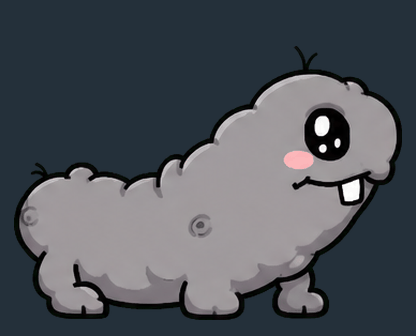
WebPTrefferWebPDoppelangriffWebPDoppeltrefferWebPSieg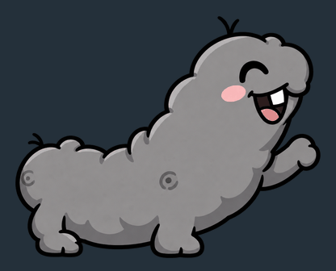
WebPNiederlage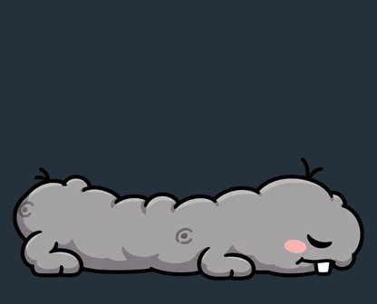
WebP
Trübsal-Zauberhaufen-Löm
Angriff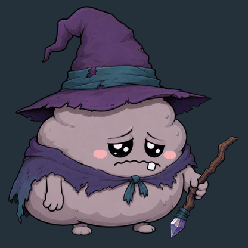
WebPTrefferWebPDoppelangriffWebPDoppeltrefferWebPSiegWebPNiederlage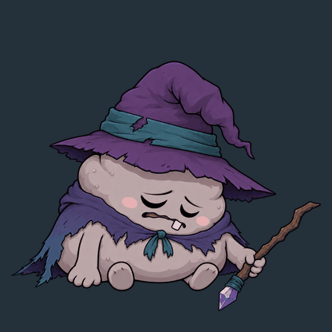
WebP
Trübsal-Zauberhaufen-Lömin
Angriff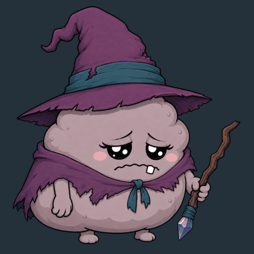
WebPTrefferWebPDoppelangriffWebPDoppeltrefferWebPSiegWebPNiederlage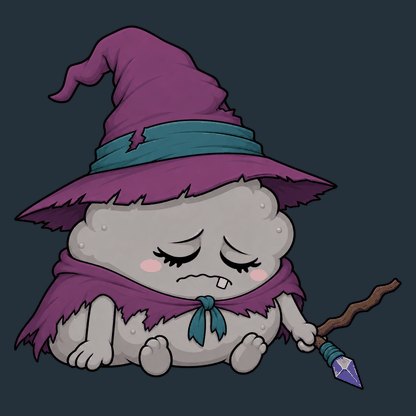
WebP
Ultra-Raumriss-Löm
Angriff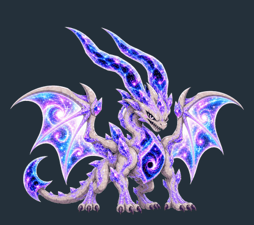
WebPTrefferWebPDoppelangriffWebPDoppeltrefferWebPSieg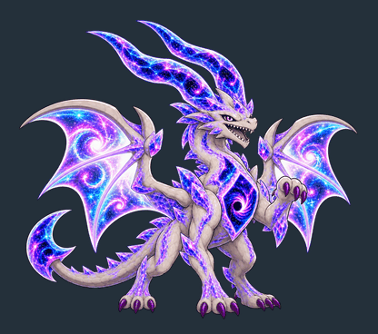
WebPNiederlage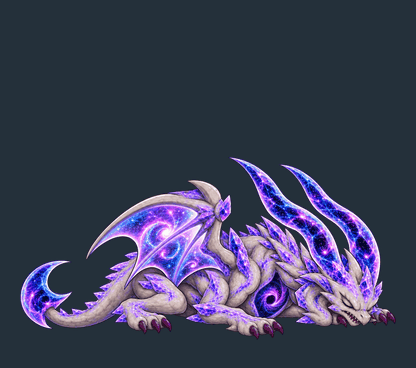
WebP
Raumriss-Erzmagierhaufen
AngriffWebPTrefferWebPDoppelangriffWebPDoppeltrefferWebPSiegWebPNiederlageWebP
Raumriss-Urkröte
Angriff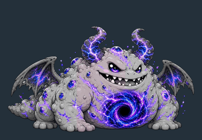
WebPDoppelangriffWebP
Raumriss-Weltschlange
Angriff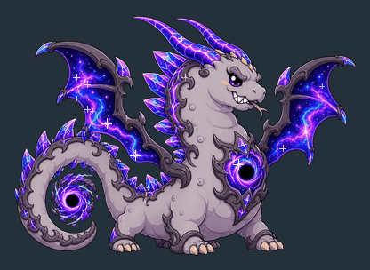
WebPDoppelangriffWebP